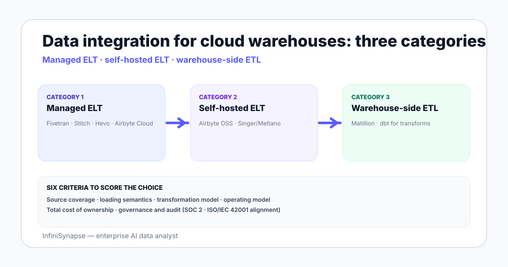

Data Integration Platforms for Snowflake, BigQuery, and Redshift in 2026
A 2026 buyer guide to data integration platforms for Snowflake, BigQuery, Redshift — Fivetran, Airbyte, Stitch, Hevo, Matillion and tradeoffs each lands.
AuthorInfiniSynapse Research, product and data architecture team
Published2026-06-28 · Last verified 2026-06-28 · Next review 2026-09-28
Evidence baseFivetran, Airbyte, Stitch, Hevo, and Matillion official documentation; cloud warehouse vendor docs from Snowflake, Google BigQuery, and AWS Redshift; field experience across teams operating on each warehouse.
Disclosure: This page is published by InfiniSynapse, an AI data analyst that connects to Snowflake, BigQuery, Redshift, and operational databases. The buyer guide focuses on integration platforms; it links to our product only where the analytical layer becomes relevant.
TL;DR
Data integration platforms for Snowflake, BigQuery, and Redshift split into three categories: managed ELT (Fivetran, Stitch, Hevo, Airbyte Cloud), self-hosted ELT (Airbyte OSS), and warehouse-side ETL (Matillion).
Managed ELT trades operating cost for connector breadth and zero-maintenance. Self-hosted ELT trades operating effort for cost control and connector ownership. Warehouse-side ETL fits teams that prefer SQL-style transformations close to the data.
Fivetran is the de facto leader on connector breadth and reliability; pricing is per Monthly Active Rows and scales steeply. Airbyte OSS is the cost-controlled alternative when you have an engineer to operate it.
Stitch is a credible mid-market managed option; Hevo lands well in Asia-Pacific markets; Matillion is a strong pick for SQL-first teams that want transformation close to the warehouse.
Pick by source coverage first, transformation model second, total cost third. After the loader, wire dbt for modeling and an AI data agent for ad-hoc cross-source queries.
Data integration platforms for Snowflake, BigQuery, and Redshift split into managed ELT (Fivetran, Stitch, Hevo, Airbyte Cloud), self-hosted ELT (Airbyte OSS), and warehouse-side ETL (Matillion). Pick by source coverage first, transformation model second, total cost third. Fivetran leads on connectors; Airbyte OSS wins on cost control when you can operate it.

Three categories of integration platform in 2026
Category
Examples
Strength
Tradeoff
Managed ELT
Fivetran, Stitch, Hevo, Airbyte Cloud
Zero-maintenance connectors
Cost scales with rows or events
Self-hosted ELT
Airbyte OSS, Singer/Meltano
Cost control + customization
Engineer time to operate
Warehouse-side ETL
Matillion, dbt Cloud (for transforms)
SQL-style transformation close to data
Less canonical for raw loading
Most teams end up with one managed loader (Fivetran or Airbyte Cloud for breadth) plus dbt for transformation. Self-hosted ELT shows up when row volumes make managed pricing painful; warehouse-side ETL shows up when transformation policy demands it.
Honest vendor reads
Fivetran
The default managed ELT choice for Snowflake, BigQuery, and Redshift. Strengths are connector breadth (300+), reliability, and incremental sync handling. The pain point is pricing — Monthly Active Rows (MAR) scales with data volume in a way that surprises growing teams. Read the Fivetran pricing page and model your top three sources before signing.
Airbyte (OSS and Cloud)
Open-source connectors with a cloud option. Strengths are the connector catalog and cost control on the self-hosted path. The tradeoff on OSS is operating burden — engineer time to maintain, monitor, and recover. Airbyte Cloud closes that gap with managed hosting.
Stitch
Credible mid-market managed option owned by Talend. Strengths are simple per-row pricing and a clean UI for analyst-operated setups. Connector breadth is smaller than Fivetran; long-tail SaaS sources may not be supported.
Hevo Data
Strong managed ELT player with notable adoption in Asia-Pacific markets. Strengths are no-code pipeline UI and live integration monitoring. Pricing is event-based; well-suited for teams with predictable event volumes.
Matillion
Warehouse-side ETL — runs transformations inside the warehouse with a visual designer plus SQL. Strongest fit when transformation policy and lineage matter more than maximum connector breadth, and when a SQL-first analytics engineering team is the operator.
Six criteria to score the choice
Source coverage. Which sources you need today, and which you expect to need within 12 months. Score by exact match, not "they say they have a connector".
Loading semantics. Full vs incremental, CDC vs polling, schema-drift handling.
Transformation model. Is the platform a loader (raw to warehouse, model in dbt) or a transformer (model in the loader)? Most modern teams pick the first.
Operating model. Managed (zero ops) vs self-hosted (engineer time).
Total cost of ownership. Per-MAR, per-row, per-connector — and how it scales with your volume.
Governance and audit. SOC 2, ISO 27001, ISO/IEC 42001 alignment, audit logs, region residency.
Score each candidate 1–5 on each criterion. The total is a coarse signal; the per-criterion gap is the actual decision input.
Warehouse-specific notes
Snowflake
All five platforms support Snowflake natively. Watch out for region and storage layer choice — make sure the loader can write to the same region as your warehouse to avoid egress costs. Snowpipe Streaming is the native low-latency option for clickstream data — see Snowpipe documentation.
BigQuery
The most natively GCP-friendly choice is the source's own BigQuery export (GA4, Stripe Sigma to BigQuery). Beyond that, Fivetran, Airbyte, and Stitch all support BigQuery as a destination. Storage write API gives lower latency than batch loads — see BigQuery Storage Write API.
Redshift
Redshift remains a credible choice for AWS-bound teams. Fivetran, Airbyte, Stitch, and Matillion all support it. The architectural watch-out is vacuuming and analyze cycles — newer warehouses do these automatically, Redshift historically benefits from explicit maintenance.
A practical selection rubric
Five questions to triage in 30 minutes:
What are your top three sources today, and which platforms support all three with maintained connectors?
Do you have a data engineer who can operate a self-hosted loader?
What is the projected Monthly Active Row count for your top three sources in 12 months?
Is your transformation policy "load raw, model in dbt" or "transform in the loader"?
What is your audit posture — SOC 2, region residency, EU AI Act alignment?
"All three sources, no engineer, growing MAR, dbt for transforms, SOC 2 mandatory" → Fivetran or Airbyte Cloud. "Engineer available, large volumes, dbt for transforms, cost-sensitive" → Airbyte OSS or Stitch. "SQL-first analytics engineering team, transformation policy strict" → Matillion.
BI for standing dashboards. Looker, Metabase, Tableau, Power BI, or Hex — connect to the modeled marts.
An AI data agent for ad-hoc analysis. The agent connects to the warehouse read-only, reads a bound business glossary, and answers questions the BI dashboard does not cover. See AI database query and what is a data agent.
Reverse-ETL for operational sync. Hightouch or Census push modeled audiences and scores back into the CRM and product.
A loader is a means; the warehouse plus models plus an analytical surface is the actual product. Pick the loader to support the next two years of those.
After loading data, ask open-ended questions across your warehouse
Once Fivetran, Airbyte, or your loader of choice has the data landing in Snowflake, BigQuery, or Redshift, connect an AI data analyst read-only and ask a question that crosses two sources. Plan, SQL, result, and verification step come back together.
What are the best data integration platforms for Snowflake, BigQuery, and Redshift?
Five credible platforms in 2026: Fivetran for connector breadth and reliability as a managed ELT, Airbyte (Cloud or OSS) for cost-controlled alternatives, Stitch for simpler mid-market managed setups, Hevo Data for event-based pricing with notable APAC adoption, and Matillion for SQL-first teams that prefer warehouse-side transformation. All five support Snowflake, BigQuery, and Redshift as destinations natively.
What is the difference between ELT and ETL for cloud warehouses?
ELT loads raw data into the warehouse and transforms it inside the warehouse, usually with dbt. ETL transforms data in the pipeline tool before loading the modeled output. For Snowflake, BigQuery, and Redshift, ELT has become the default — the warehouse compute is now cheap enough to land raw, and the model layer is easier to debug, version-control, and test inside the warehouse rather than in an external transformer.
Why is Fivetran more expensive than Airbyte?
Fivetran prices on Monthly Active Rows, which scales with data volume. The cost covers a managed connector catalog of 300+ sources, automated schema drift handling, and SLA-backed reliability. Airbyte OSS shifts the cost from license fees to engineer operating time and infrastructure. Airbyte Cloud splits the difference. Whether the Fivetran premium is worth it depends on engineer availability and your tolerance for outage risk.
When should a team pick Matillion over Fivetran?
When transformation policy and lineage matter more than connector breadth, when a SQL-first analytics engineering team is the operator, and when the warehouse-side transformation pattern (the work happens close to the data, designed visually plus SQL) maps to your governance posture. Matillion is also stronger when complex transformations sit between loading and serving — a pattern less common in modern ELT-plus-dbt stacks.
Do data integration platforms handle schema drift?
Most managed ELT platforms — Fivetran, Airbyte Cloud, Stitch, Hevo — handle additive schema drift (new columns, new tables) without intervention. Subtractive or breaking changes (renamed columns, dropped tables) usually require manual review. Self-hosted Airbyte OSS handles schema drift through the connector logic; the team operating it owns the recovery path.
What is the typical cost of a data integration platform?
Managed ELT vendors price per Monthly Active Rows (Fivetran), per event volume (Hevo), or per row scanned. Costs for a typical mid-market SaaS data stack run from a few hundred dollars per month at small volumes to mid-five-figures monthly at growth scale. Self-hosted Airbyte OSS shifts cost from license to infrastructure plus engineer hours. Model your top three sources at projected 12-month volumes before signing.
What should I wire after the data integration platform?
Four standard pieces: dbt for modeling raw tables into staging, intermediate, and mart layers; a BI tool like Looker, Metabase, Tableau, or Power BI for standing dashboards on the marts; an AI data agent connected read-only for ad-hoc questions the dashboard does not pre-build; and a reverse-ETL tool like Hightouch or Census to push modeled audiences and scores back into operational tools like the CRM and product.
Methodology and review notes
Last updated: 2026-06-28 · Next scheduled review: 2026-09-28
This buyer guide synthesizes Fivetran, Airbyte, Stitch, Hevo, and Matillion official documentation; cloud warehouse vendor docs from Snowflake, Google BigQuery, and AWS Redshift; pricing pages and capacity calculators from each vendor; and field experience across data teams operating on each warehouse. Vendor reads aim for fair tradeoff descriptions rather than promotional language.
Conflict of interest: InfiniSynapse publishes this guide and sells an enterprise AI data analyst. To reduce bias, the page leads with the topic itself, treats InfiniSynapse as one option among many, and links to external sources for every numeric claim.
Update cadence: Reviewed every 90 days for accuracy and link health.